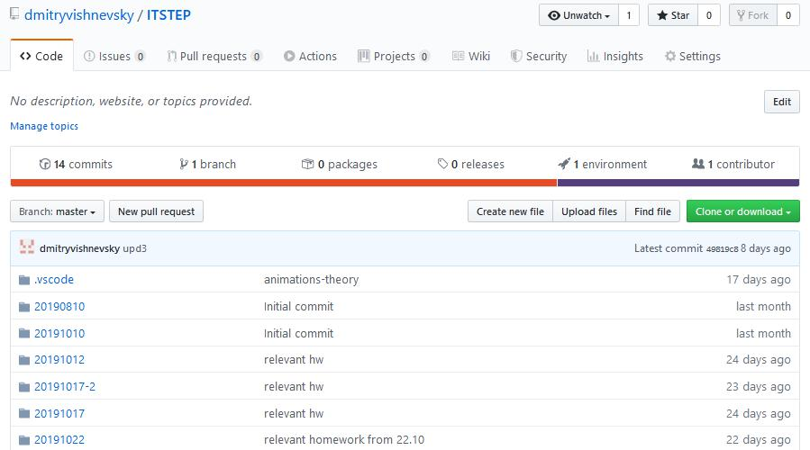

Правила оформления файла readme.md на github
Если вы начали работу на GitHub, решили загрузить туда свой проект для совместной работы с единомышленниками, то, скорее всего, в первую очередь перед вами встанет проблема создания первого файла – файла «readme.md».
Можно, конечно, просто выложить простой, неформатированный текстовой файл. Но вам захочется сделать его удобочитаемым, чтобы ссылки были выделены, блоки кода, присутствовали таблицы и так далее…
Эта статья поможет вам в этом.
Для форматирования текста на GitHub используются достаточно простые правила. Я перечислю основные и достаточные, так как не претендую на полноту официального руководства.
Текст можно обработать в любом простом текстовом редакторе, например в Notepad++, которым пользуюсь сам. А можно и прямо на GitHub редактировать файл в он-лайн режиме.
Стилистическая разметка должна быть такой:
Разбиение на абзацы производится вставкой пустой строки между ними (нажмите "Enter" после абзаца).
Горизонтальная полоса между абзацами - тег <hr> - три или более звёздочек или дефисов
Первый абзац *** Второй абзац
или
Первый абзац --- Второй абзац
Далее - заголовки и прочее:
h1 заголовок первого уровня =====================
h2 заголовок второго уровня
-----------------------------------
### h3 заголовок третьего уровня
#### h4 заголовок четвёртого уровня
##### h5 заголовок пятого уровня
###### h6 заголовок шестого уровня
Оформление ссылки [Видимая часть, название ссылки] (http://webdesign.ru.net адрес ссылки - невидимая часть)
[Мой сайт](http://webdesign.ru.net)
Если заключить адрес в угловые скобки, то он автоматически станет ссылкой
<http://webdesign.ru.net>
Выделение жирным шрифтом
**Жирный шрифт** ***Наклонный жирный***
Выделение тёмным фоном прямо в тексте
`выделенные слова`
Блок текста с более тёмным фоном, четыре пробела (и более) от начала каждой строки
dir /fonts
dir /images
dir /js
Блоки текста с подвеченным синтаксисом. Выделенный цветом фона блок с html-кодом. Теги выделяются цветом по правилам html
```html <meta name="viewport" content="width=device-width, initial-scale=1.0"> ```
Выделенный цветом фона блок с php-кодом. Теги выделяются цветом по правилам php
```php <?php here_pagecontent(); ?> ```
Выделенный цветом фона блок с каскадными таблицами. Теги выделяются цветом по правилам css
```scss /* или css */
@import "bower_components/tree-normalize/generic.normalize";
h1 {
font-size:1.5em;
font-weight: 300;
}
```
И так далее...
Блок текста, выделенный тёмной полосой по левому краю (цитата)
> Текст > > Продолжение текста выделенного блока > Завершение текста
Допустимы вложенные цитаты (цитата в цитате). Тогда цитата второго уровня выделяется двумя знаками ">>", а цитата третьего уровня вложенности - тремя.
Таблица с чередованием светлых и тёмных строк (зебра)
Название файла | Содержание файла ----------------|---------------------- style.css | Пустой файл каскадной таблицы стилей, в который производится сбока необходимых стилей reset.css | Reset CSS от Эрика Мейера normalize.css | Нормалайзер CSS от Nicolas Gallagher block.css | Основные стили блоков системы addition.css | Дополнительные стили fontawesome.css | Стили иконочного шрифта layout.css | Основные стили, применительно к определённому сайту lightbox.css | Стили лайтбокса, если таковой используется index.html | Индексный файл для проверки вносимых изменений
<li> Листинг - ненумерованый список
* Пункт 1 * Пункт 2 * Пункт 3
Нумерованный список создаётся ещё проще:
1. Пункт 1 2. Пункт 2 3. Пункт 3
italic - наклонный шрифт. Пробел, знак препинания или подчёркивание отменяют правило маркера
_наклонный_ _шрифт_ _наклонный__шрифт_
Комбинируя эти маркеры вы сможете правильно разметить свой текст, сделать его более понятным.
Надеюсь, что эта статья будет вам полезна. Успехов в работе на GitHub!
UPDATE!
Вставка изображения в текст

Восклицательный знак обозначает изображение, в квадратных скобках даётся краткое описание, в обычных круглых скобках - полная ссылка на изображение.
Опубликовал Administator - 25 марта 2016, 14:46 - 20729 просмотров
Похожие записи: Разновидности логотипов и их стили.
Любовь и ненависть в CSS
Ручная сортировка публикаций в Ruxe Engine
Аксиоматический CSS. Часть 3. Синтаксис.
Аксиоматический CSS. Часть 2
Теги: #веб-дизайн, #вёрстка, #GitHub, #readme.md
Комментарии
Зарегистрируйтесь или войдите в Ваш аккаунт, чтобы оставить комментарий